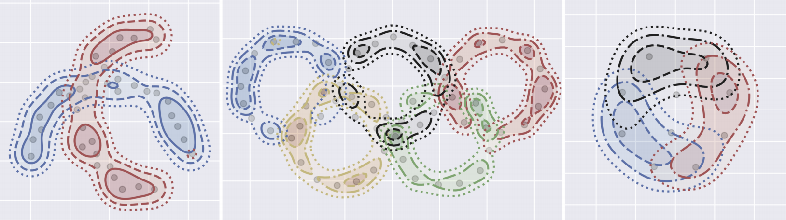
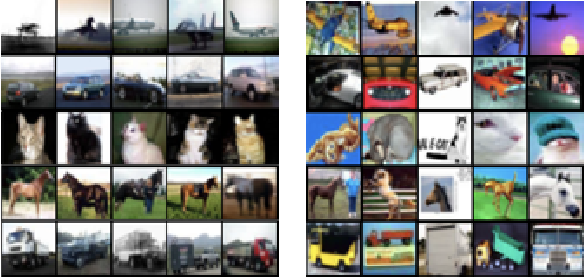

Overview
I study machine learning, particularly nonparametric statistics, where I am interested in developing and proving guarantees for algorithms and studying the basic mathematics underlying certain nonparametric problem settings. In deep learning I have mostly focused on studying deep anomaly detection, but I am beginning to move into other deep topics such as deep probabilistic models.Potential Collaborators and Students: Students sometimes send me emails looking for PhD or internship positions. I am not in control of any budget so I cannot hire PhD students nor other sorts of researchers. I can help advise students in their research (PhD or otherwise) and I am open to considering collaborations in this capacity.
Structured Nonparametrics
Traditional nonparametric methods often suffer from the curse of dimensionality, making them impractical for high-dimensional data like images or audio. However, real-world data typically exhibits strong structural dependencies - neighboring pixels in images are highly correlated, while distant pixels are nearly independent. I study how incorporating such structural assumptions (particularly using graphical models) can dramatically improve the performance of nonparametric methods.
This work explores how structure in data can be leveraged to overcome fundamental limitations in nonparametric statistics. By understanding and exploiting these structural properties, we can develop more efficient estimators for various tasks including density estimation and distribution learning. The applications span across different data types including images, audio, and text, where local dependencies and global independence patterns naturally arise.
Relevant Works:
This work explores how structure in data can be leveraged to overcome fundamental limitations in nonparametric statistics. By understanding and exploiting these structural properties, we can develop more efficient estimators for various tasks including density estimation and distribution learning. The applications span across different data types including images, audio, and text, where local dependencies and global independence patterns naturally arise.
Relevant Works:
 Conditioning introduces independence in images, which suggests that Markov random fields model image data effectively.
Conditioning introduces independence in images, which suggests that Markov random fields model image data effectively.Left: Conditional correlation of red pixels with the rest in CIFAR-10.
Right: Conditional correlation when conditioned on the green pixels.
Low-Rank Nonparametrics
Low-rank methods have been shown to be useful for estimation problems like matrix completion and linear regression. I am interested in extending this intuition to the nonparametric setting, starting with nonparametric density estimation. Thus far I have found that techniques used previously for finite dimensional problems like matrix completion do not extend to the infinite-dimensional problems like nonparametric density estimation. Low rank nonparametric methods will require their own novel algorithms and analysis.Relevant Works
- Improving Nonparametric Density Estimation with Tensor Decompositions, arXiv 2020
- Beyond Smoothness: Incorporating Low-Rank Analysis into Nonparametric Density Estimation, NeurIPS 2021
Nonparametric Mixture Modelling
In mixture modelling one tries to find a convex combination of densities which fit the data well, with the idea being that the mixture components will reveal some interesting structure in the data or that they can be used for some other task, e.g. clustering. For mixture modelling to make sense one typically restricts the mixture components to some class of densities, for example the space of multivariate Gaussian distributions in the case of the classic Gaussian mixture model. I study the setting where one makes no assumptions on the mixture components and instead one has access to collections of samples of known to come from the same mixture component. This problem has close connections nonnegative tensor factorizations.
As an example of this problem setting lets consider topic modelling. In the topic modelling setting a mixture component would be a distribution over words, which in this case is representative of a "topic." A "collection of samples known to come from the same component" could be a document, say a Twitter tweet, and it is assumed that the tweet is generated from a single topic. The words in this example are discrete and this discrete topic modelling setting has already seen a fair amount of investigation. One could, however, use a powerful word embedding (e.g. BERT) to transform the discrete words into real-valued vectors thus yielding a continuous version of the topic model that fits the "nonparametric mixture model" setting. The transformed words' geometry encodes abstract meaning which is not available with the discrete untransformed data, and additionally allows for more meaningful relations beyond the discrete case that can only describe if two words are equal or not. A mixture component in this case would be a probability distribution over the word embedding space, i.e. a probability distribution over abstract concepts.
Beyond topic modelling there exists applications for nonparametric mixture modelling in settings where one expects subjects to be grouped, but the grouping is only obvious with repeated observations. This occurs, for example, in psychometrics where a condition like depression is only manifest in data over a period of time, not a single observation.
I study both the algorithmic and theoretical aspects of nonparametric mixture modelling.
Relevant Works:
As an example of this problem setting lets consider topic modelling. In the topic modelling setting a mixture component would be a distribution over words, which in this case is representative of a "topic." A "collection of samples known to come from the same component" could be a document, say a Twitter tweet, and it is assumed that the tweet is generated from a single topic. The words in this example are discrete and this discrete topic modelling setting has already seen a fair amount of investigation. One could, however, use a powerful word embedding (e.g. BERT) to transform the discrete words into real-valued vectors thus yielding a continuous version of the topic model that fits the "nonparametric mixture model" setting. The transformed words' geometry encodes abstract meaning which is not available with the discrete untransformed data, and additionally allows for more meaningful relations beyond the discrete case that can only describe if two words are equal or not. A mixture component in this case would be a probability distribution over the word embedding space, i.e. a probability distribution over abstract concepts.
Beyond topic modelling there exists applications for nonparametric mixture modelling in settings where one expects subjects to be grouped, but the grouping is only obvious with repeated observations. This occurs, for example, in psychometrics where a condition like depression is only manifest in data over a period of time, not a single observation.
I study both the algorithmic and theoretical aspects of nonparametric mixture modelling.
Relevant Works:
- An Operator Theoretic Approach to Nonparametric Mixture Models, Annals of Statistics 2019
- Consistent Estimation of Identifiable Nonparametric Mixture Models from Grouped Observations, NeurIPS 2020
- Generalized Identifiability Bounds for Mixture Models With Grouped Samples, IEEE: Transactions on Information Theory 2024
 Our method is able to recover arbitrary mixture model components so long as they are identifiable. This enables things like provably correct clustering even when the cluster distributions overlap like above.
Deep Anomaly Detection
Anomaly detection is the task of determining if a new data point seems anomalous or unusual when provided with a collection of data known to be nominal (normal looking). There exist many methods for anomaly detection in the classic lower-dimensional settings. However there is less development of deep approaches to anomaly detection methods for use with high dimensional data, particularly images. This lack of development is not due to a lack of usefulness: there are many applications for deep anomaly detection including medical imaging applications like tumor detection, and quality control for industrial applications.
I work on deep one-class methods for deep anomaly detection, for example Deep Support Vector Data Description. These methods are quite effective and have garnered a fair amount of attention from the machine learning community. I am interested collaborations with domain experts who have intriguing applications for deep anomaly detection.
Relevant Works:
I work on deep one-class methods for deep anomaly detection, for example Deep Support Vector Data Description. These methods are quite effective and have garnered a fair amount of attention from the machine learning community. I am interested collaborations with domain experts who have intriguing applications for deep anomaly detection.
Relevant Works:
- Deep One-Class Classification, ICML 2018 [CODE]
- Image Anomaly Detection with Generative Adversarial Networks, ECML PKDD 2018
- Deep Semi-Supervised Anomaly Detection, ICLR 2020 [CODE]
- Explainable Deep One-Class Classification, ICLR 2021 [CODE]
- Transfer-Based Semantic Anomaly Detection, ICML 2021 [CODE]
- A Unifying Review of Deep and Shallow Anomaly Detection, Proceedings of the IEEE 2021
 CIFAR-10 dataset. Using our method we show the most normal examples from some classes (e.g. "cat" in the middle) on the left with most anomalous on the right.
Other Misc. Topics
I have worked a bit on a few other research topics, a couple are listed here.- Supervised Density Estimation: How can we incorporate samples which we know should have low likelihood in our density estimator?
- A Proposal for Supervised Density Estimation, NeurIPS: Preregistration Workshop 2020
- Robust Nonparametric Density Estimation